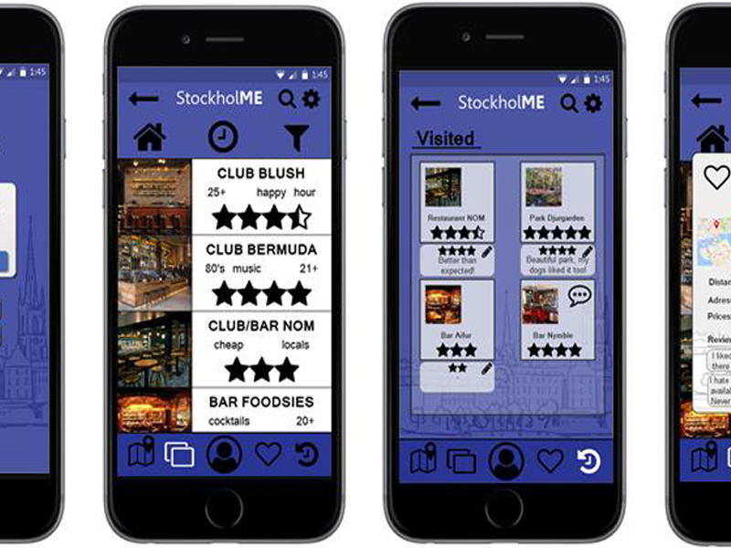

This report describes the design process of a mobile application for international students in Stockholm, called StockholME. During the process, brainstorming techniques, as well as semi-structured face to face interviews were applied in order to gather ideas and to do research on the target group to find a problem. After that, the data gathered was used to synthesize different personas to better understand the target group and their needs. Next to that, storyboard scenarios were developed to express the vision of a solution and its role in users’ lives. When starting the sketching phase, a workshop was conducted with final users to gather some input to avoid self-referential design. With this input, researchers built different prototypes using parallel prototyping, opening the design space and getting different ideas to later integrate the best parts into one paper prototype to be developed and tested. Usability evaluation was conducted with final users both in an explorative way and in a task-oriented approach and both with the final paper prototype and with a higher fidelity digital one. The main goal of evaluation was to once again get feedback from the target group and check that assumptions and the vision made
